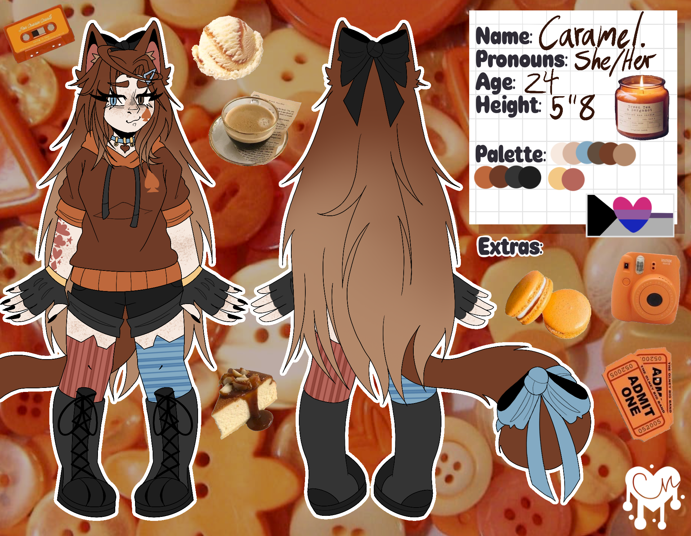
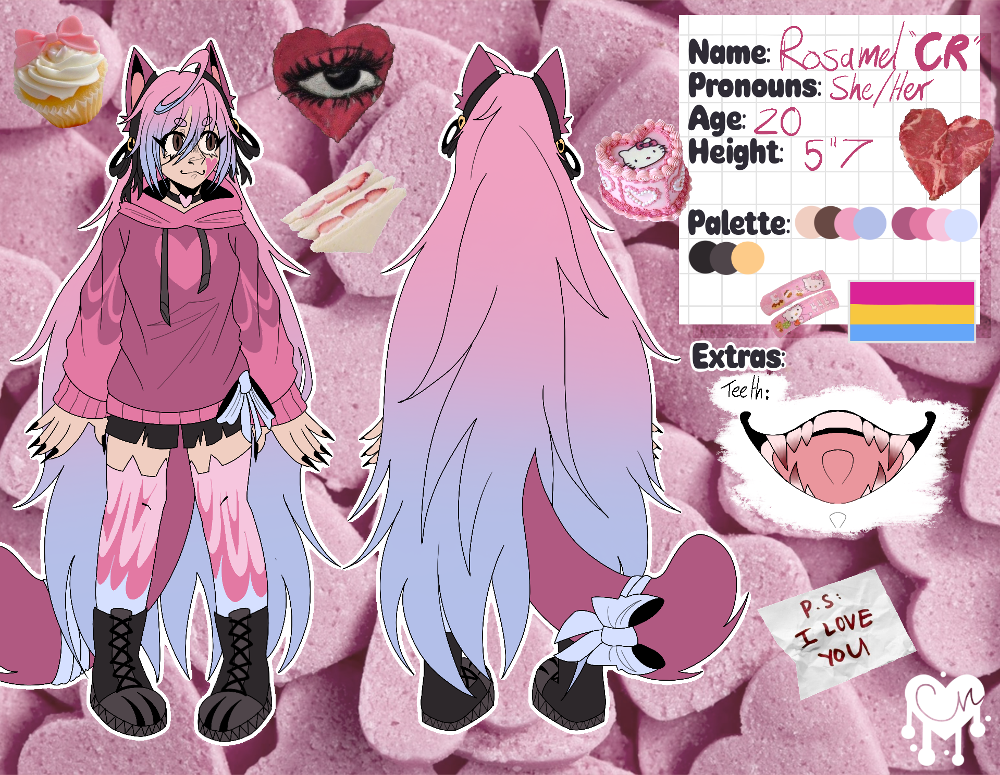
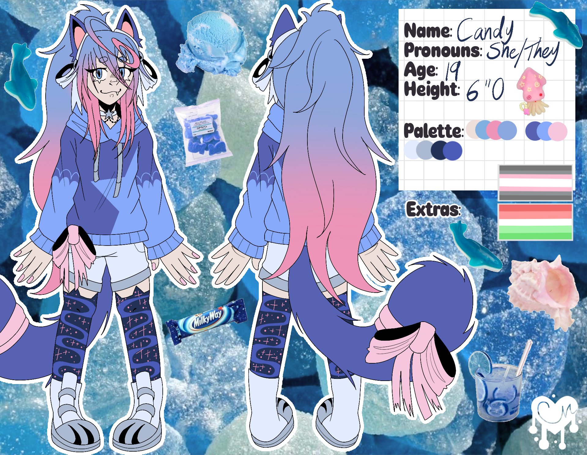
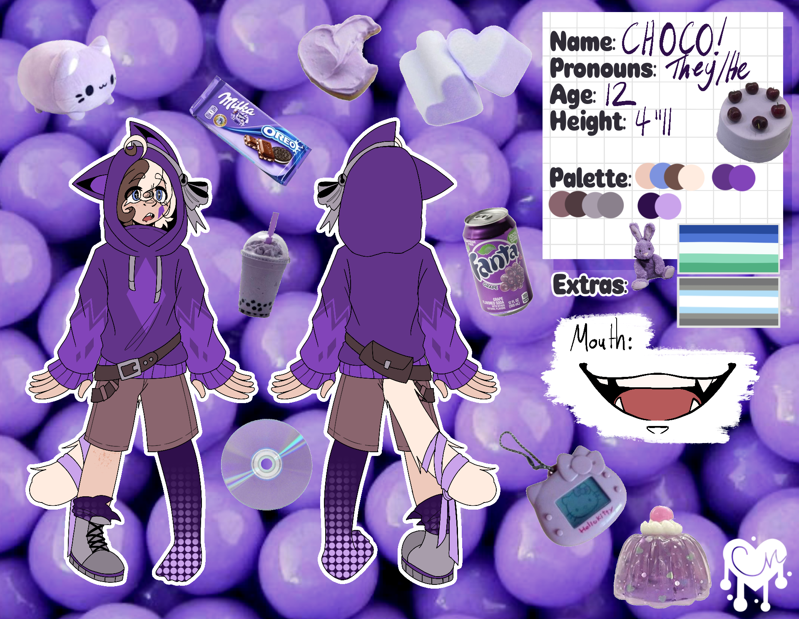
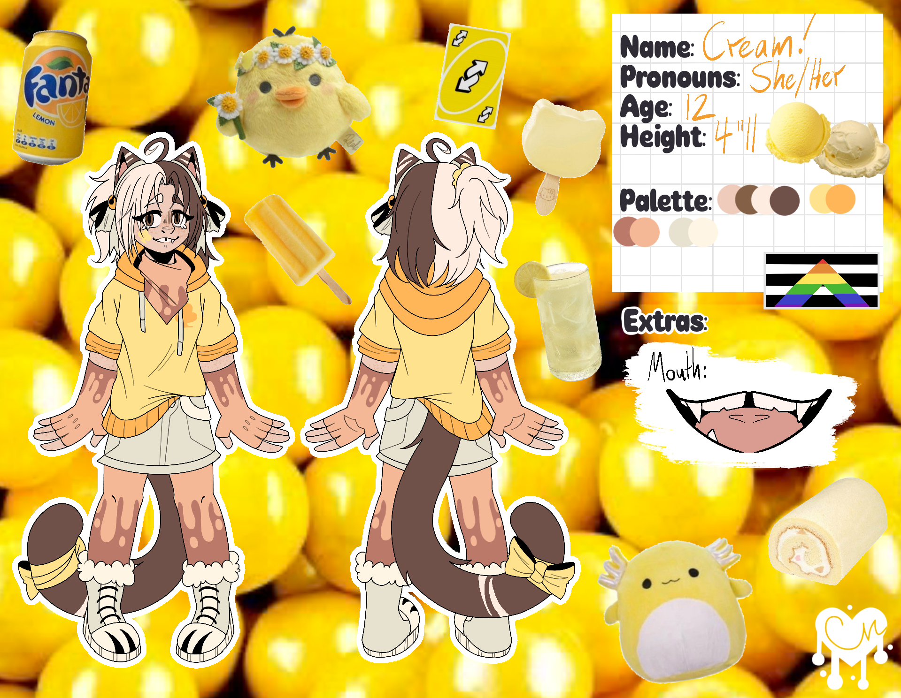
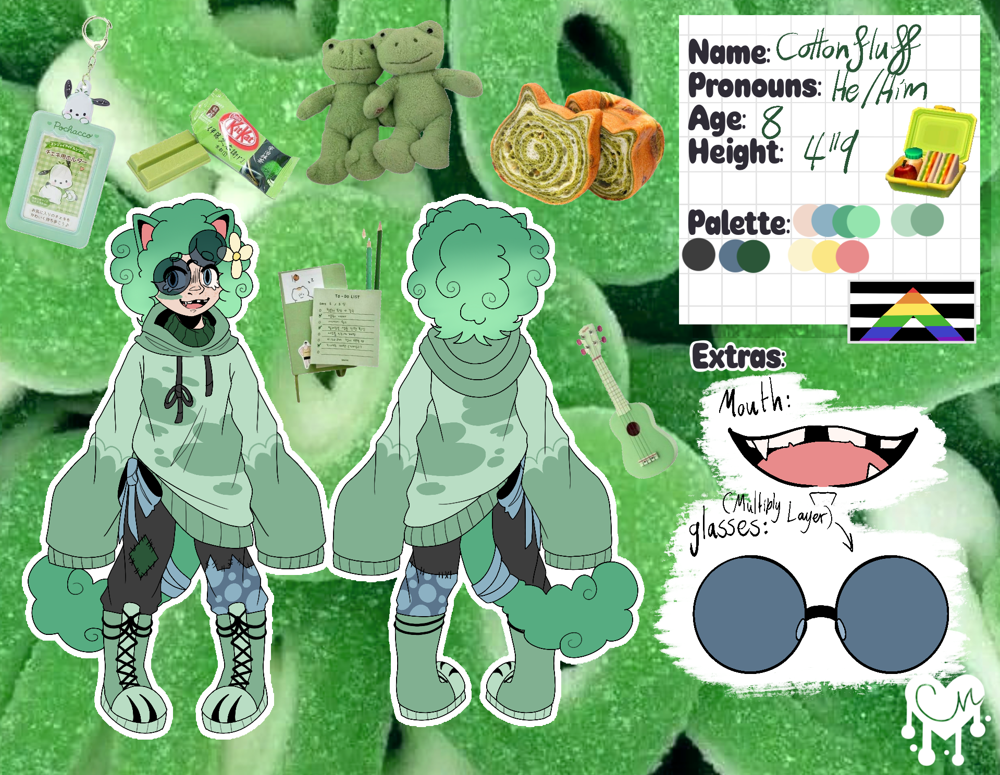

Caramel Sweetster
“Sweeter than the rest? Have you ever met me before?”(She/Her) - Demi-Biromantic
Caramel, real name Emberly is the oldest Sweetster out of the siblings.
She’s a hot-headed, tired yet caring sister for her siblings, putting up with all their shenanigans.
Caramel loves coffee, sunset ambience and curling up to read a good book by the fireplace.
Fun fact! She has a tattoo with all her sibling's markings on them! Despite her stubbornness, she loves her siblings.

Cakey "CR" Sweetster
“Awww! You’re so cute I could EAT you up!”(She/Her) - Pansexual
Cakey or… CR, real name Rosamel is the chaotic second oldest sibling out of the Sweetsters.
CR is a chaotic and fun person. Not exactly rule binding, always wanting to cause some trouble any chance possible. She has an obsession with making things always out of balance.
Enjoying the thrill of chases when she gets caught in her acts.
She enjoys baking cupcakes and fun treats for her friends and families!
She’s closest to her younger sibling Candy! Such a duo!
Fun fact! She…enjoys…..eating…………..eating…….eating….flesh….

Candy Sweetster
“I am your fearless champion! Queen of the illusion woods!”(She/They) - Demi-girl Abrosexual
Candy, real name Aurora, is the third oldest out of the Sweetster siblings.
Candy is a courageous, daring fun-loving Sweetster. Diving into adventure, wanting to have the best ones with her siblings! Whether that be searching for treasure or solving a mystery.
She enjoys making gifts for her siblings! Her favourite creation to make are sour gummy worms in jars, nicknaming them “Happy worms!”
Candy is closest with her older sibling, CR, they’re stuck together like glue!
Fun Fact! She loves the ocean!

Choco Sweetster
“Woahh...Look a flower! Huh? What do you mean there’s a bear behind me?”(They/He) - Demi-Boy, Gay
Choco, real name Skylar is the 3rd youngest sibling out of the sweetsters!
Choco is an air-headed kid who’s oblivious to the world around him, always having his head in the clouds.
Most of the time he usually thinks about food which causes him to drool a lot down their cheek. He enjoys getting involved in fun things and trying his best to help out with Caramel's work. He doesn't know much though.
Choco is the older twin to Cream Sweetster, always spending time with her.
Choco enjoys meeting new people! He loves reptiles like lizards and snakes and eating things he shouldn’t.
Fun fact! He has a frog sticker collection!

Cream Sweetster
“You wanna play a game? I’m really good at games, so good luck on beating me!”(She/Her) - Straight Ally
Cream, real name Stella, is the 2nd youngest in the Sweetster Family.
Cream is the active sporty type. Always playing games and getting competitive with others. Cream dreams of being an inspiration to other people! Rambling over uplifting stories, and wishing to be an author someday!
She is the younger twin of Choco, despite being a little taller than them.
Cream enjoys passing the time by making her own stories on the spot or playing games with others!
Fun fact! Her favourite animals are bears!

Cottonfluff Sweetster
“Knock knock! Oh, who’s there? It’s me! The coolest Cotton all around!”(He/Him) - Straight Ally
Cottonfluff, real name Basil, is the youngest of the siblings. He’s a small kid but he has a big heart and imagination! Cottonfluff loves to take any chance he gets to learn something new. He aspires to grow up and become a successful person in comedy or acting, wanting to make others laugh and smile.
Cotton’s best friend is his imaginary friend! Described to be an elongated shadow-like figure who’s always by his side.
He's friends with all the woodland animals in the illusion forest! They listen to him perform and make jokes. Sometimes he even plays the trumpet for them!
Fun fact! He likes mints but hates spicy things.
